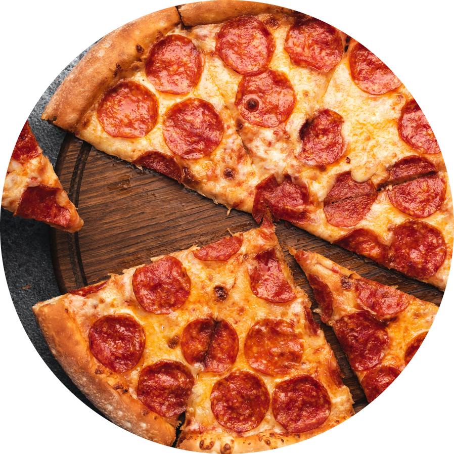
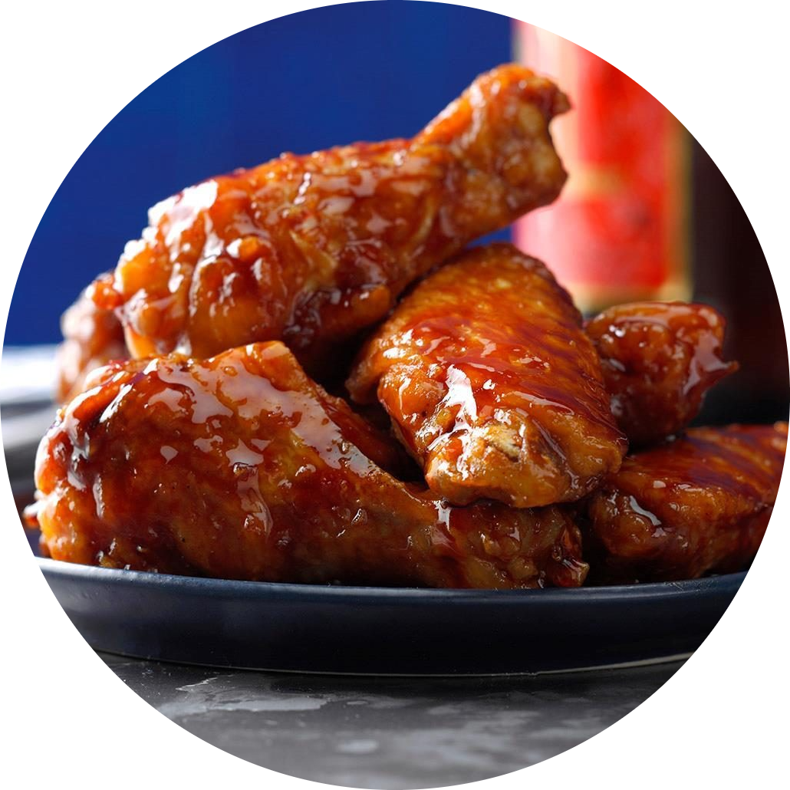
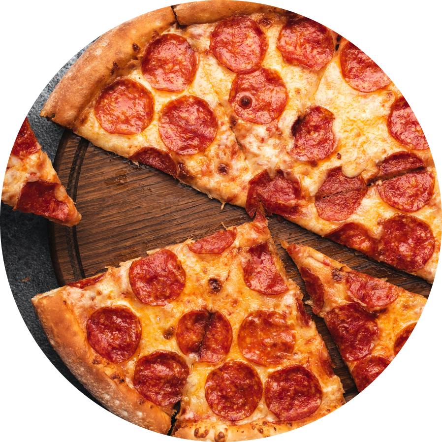
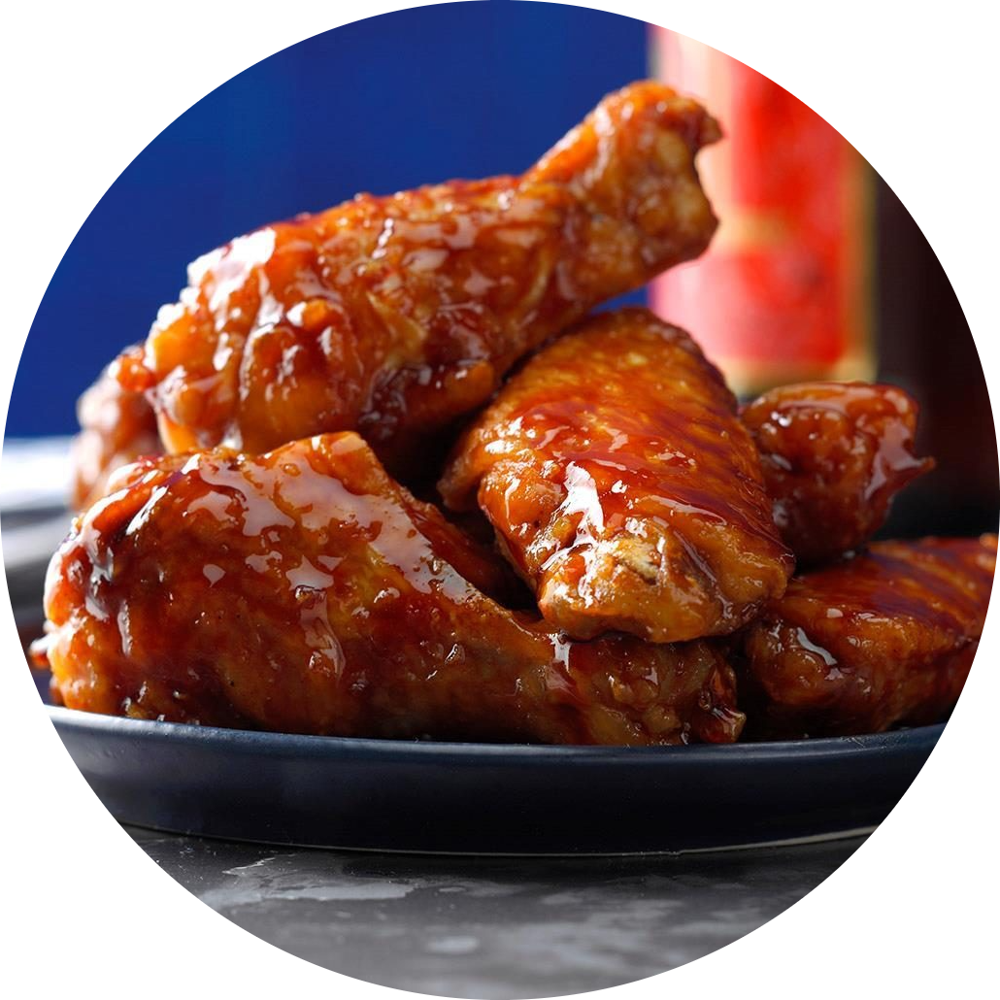

Welcome to UH Cafe
Welcome to UH Café, the newest culinary hotspot on campus where flavor, innovation, and community converge to create an unforgettable dining experience. Nestled in the heart of the university,UH Café is more than just a café; it's a vibrant culinary hub where students, faculty, and staff come together to savor delicious food, forge connections, and fuel their passions.

More about UH Café
UH Café is state of art cafeteria opened for UH sugarland students
 


